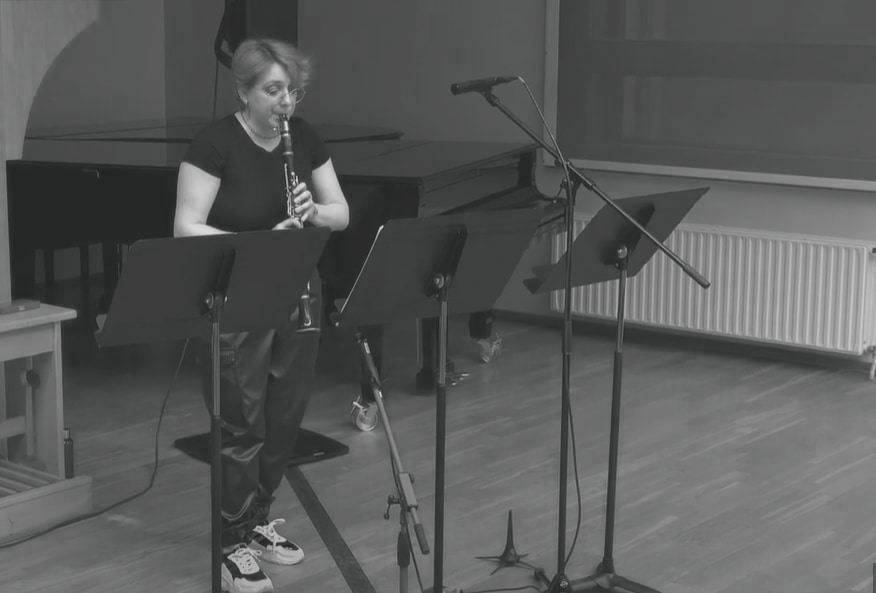

Deep Time is a concept used to describe time on geologic time-scales. Time-scales within which life can evolve, animals can speciate and go extinct and continents move. Compared to these time-scales the difference between a modern clarinet and a historical instrument is very slight. Silence in this piece is there to remind the listener of the vast gaps in our understanding of the distant past. Portions of the music are in fact erased.
Written for Vittoria Ecclesia’s call for scores in 2024.
04.18.24 . 7pm EEST . Doctoral Recital "Mosaiik" - Vittoria Ecclesia . Organ Hall, Estonian Academy of Music and Theatre . Tallinn, HR . EE
Vittoria Ecclesia, 13-key Müller system Clarinet